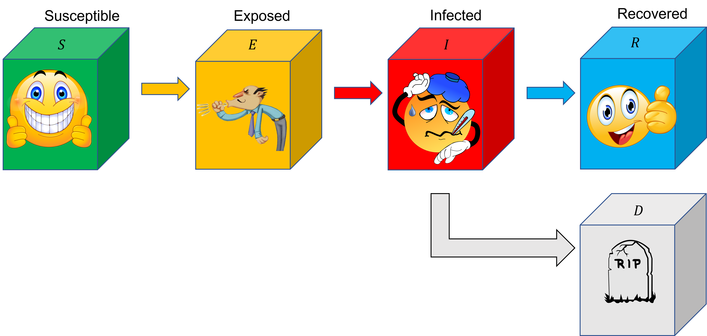

Spread of Infectious Diseases
Nov 4, 2021
Learning objectives. By completing this project, the student will:
- Describe the spread of the Corona virus disease (COVID-19) with simple compartment models.
- Implement a Runge-Kutta solver with adaptive time step control, and apply it to the compartment models.
- Constrain model input parameters by comparing with data for different locations.
In the data folder of the project you will find data for the first 600 days of the corona outbreak. When modeling data using an ODE model, we need to know the initial conditions. In this project we will assume only one person to be infected initially, and investigate how well the model fits with the data. As you will see later in this project, the model we are using cannot in the current state simulate several waves of infections. Therefore we recommend you to only use data from the first wave (\( \sim \) 200 days) when determining model parameters.
(Note: In the exercises (and solution to the exercises) from the ODE chapter [1] you can find examples of implementation of a general ODE solver.)
Theory: Compartment models
Compartment models [2] are widely used to study the spread of diseases in a population. In these models, the total population in an area is partitioned into a set of compartments, representing the possible "disease states" (healthy, infected, recovered, etc.). Ordinary differential equations (ODEs) are set up to describe how individuals "flow" from one compartment to another. The equations can be either deterministic or stochastic. While stochastic models are more realistic, they are also more complex to analyze, and in this project we will only consider deterministic models.
Theory: SI-model
We first consider the SI-model (figure 1), which consists of just two compartments:
- \( S \) - Susceptible: people at risk of infection.
- \( I \) - Infected people.
Figure 1: The \( SI \)-model: \( S \) and \( I \) can be viewed as a "mixing tank", in which individuals meet with equal probability, and the chance of getting infected is the same for everyone. Note that "transport" is exclusively in one direction, from the class of susceptible people to infected ones.

For each time \( t \), \( S(t) \) denotes the number of susceptible people, while \( I(t) \) is the number of infected people. To develop a mathematical model, we must calculate the rate of flow between the two compartments. We start by making some general observations:
- During an arbitrary time interval \( \Delta{t} \), a certain number of individuals will come into contact.
- Whenever a healthy person meets a sick person, there is a certain probability that the healthy person is infected.
By saying that \( \beta \) is constant, we have made two very strong assumptions:
- People make the same number of contacts regardless of population size, and independent of time.
- The probability of becoming sick, given that you meet an infected person, is always the same.
It can be a good idea to convert a model into dimensionless form. This is especially true when the goal is to fit the model to data, because it can reduce the number of free parameters and/or make sure that "typical solutions" have "reasonable" values (e.g., not too large values, which can be a problem for certain numerical algorithms). In this project we will scale the equations with respect total population size:
- Let \( s(t)=S(t)/N \) denote the fraction of the total population that is susceptible (at any time \( t \)).
- Let \( i(t)=I(t)/N \) be the fraction of infected people.
If \( \beta(t)=\beta \) is constant, the analytical solution to the SI-model is $$ \begin{align} \tag{7} s(t) &=\frac{\frac{s_0}{i_0}\exp(-\beta{t})}{1+\frac{s_0}{i_0}\exp(-\beta{t})} \,, \\ \tag{8} i(t) &=\frac{1}{1+\frac{s_0}{i_0}\exp(-\beta{t})}\,, \end{align} $$ where \( i_0=i(0)=I(0)/N \), and \( s_0=s(0)=S(0)/N \).
Exercise 1: Is the model any good?
"All models are wrong, but some are useful" is a famous quote attributed to the English statistician G. E. Box [3]. Clearly, the \( SI \)-model is very simple; it contains a single free parameter, \( \beta \). Is it useful? That is, can we learn something about the spread of the Corona virus, which in turn can be used to take preventive measures?
The only way we can investigate this question is to compare the model with data.
We will use data found at the Github repository Center for Systems Science
and Engineering (CSSE) at Johns Hopkins University.
We have already extracted country-level data for you, and stored it in a
processed format in the text file data/corona_data.dat.
Data for the Hubei province in China, where it is believed that the virus
first arose, is also included in the text file.
Part 1.
To increase readability and reusability of code, it is important to break it into smaller pieces. For example, it is almost always a good idea to separate the reading and (pre)processing of data from plotting, and further from model calculations.
- Make a Python function that a) extracts Corona data for a specific location and b) returns the results in the form of a Pandas dataframe.
- Make one or several functions that takes as input the dataframe for a specific location, and makes a plot showing the number of confirmed cases and/or deaths of COVID-19. Allow for the possibility of including predictions of the analytical SI-model in the same figure.
Part 2.
- Choose four specific locations (e.g. Hubei, Norway, Sweden etc.). Use the functions you just made to plot the cumulative number of confirmed cases of COVID-19 versus time.
- Make another figure showing the cumulative number of deaths (for the same locations).
- Can the simple SI-model explain the observations you plotted in parts 2 and 3? If the answer is yes, can you think of other situations in which it cannot? If no, why not?
Exercise 2: Finding optimal parameter values
We want to choose a value for \( \beta \) such that the SI-model comes close to the data. Finding "optimal" parameter values will in the following be based on the method of least squares. Specifically, the objective function we want to minimize is the sum of squared residuals, $$ \begin{align} \tag{9} \text{SSR} = \sum_{i=0}^{N_d-1}r_i^2=\sum_{i=0}^{N_d-1}(d_i-m_i)^2\,, \end{align} $$ where \( N_d \) is the number of data points, \( d_i \) is the \( i \)-th data point, and \( m_i \) is the corresponding model prediction. For the \( SI \)-model, we are only going to compare with the cumulative number of reported cases of COVID-19, and we let \( m_i=i(t_i;\beta) \). The optimal parameter value for \( \beta \) can then be found where the least square estimate (objective function) has the minimum value, this is equivalent to stating that the derivative of the least square estimate should be zero.
The derivative of the objective function is $$ \begin{align} \tag{10} \frac{d\text{SSR}}{d\beta}&=2\sum_{i=0}^{N-1}r_i\frac{dr_i}{d\beta} = -2\sum_{i=0}^{N-1}(d_i-i(t_i;\beta))\frac{di(t;\beta)}{d\beta}\,, \end{align} $$ where the derivative of \( i(t;\beta) \) with respect to \( \beta \) can be found from equation (8): $$ \begin{equation} \tag{11} \frac{di(t;\beta)}{d\beta}=\frac{\frac{s_0}{i_0}te^{-\beta t}}{\left(1+\frac{s_0}{i_0}e^{-\beta t}\right)^2}\,. \end{equation} $$
Part 1.
- Write two Python functions, one that calculates SSR for a given location, and another that calculates the derivative of SSR for a given location.
Choose a few different locations.
- For each location, use the functions you just made to plot both SSR and its derivative as a function of \( \beta \) (in the same figure).
- What do you observe regarding the shape of the functions?
Part 3.
In the course we have covered several algorithms that are useful for finding roots and/or minima of functions, e.g., fixed point iteration, Newton's Raphson's method, the bisection method, the secant method, and gradient descent.
- Implement at (least) one of the methods listed above, and use it to find the \( \beta \)-value that minimizes SSR. Do this for each of the locations you chose in Part 2.
- Can you always expect to find an optimal \( \beta \)-value with your chosen algorithm(s)? Why / why not?
Theory: SEIRD-model
Figure 2: Illustration of the \( SEIRD \) model.

We extend the SI-model by adding three more compartments:
- \( E(t) \): the number of exposed people; people that have been infectied, but that are not yet contagious to others.
- \( R(t) \): the number of recovered (immune) individuals.
- \( D(t) \): the number of dead people.
The new model parameters are explained in the table below.
Let \( C(t) \) denote the cumulative number of cases of COVID-19 at time \( t \). For the SI-model we assumed \( C(t)=I(t) \), however that is not true for the SEIRD-model: \( I(t) \) now only accounts for the number individuals that are infected at the specific time t. Nor is \( C(t) \) equal to the sum of all \( I(t) \)-values, because that will lead to counting individuals more than once (people stay sick for more than a single day). In this project, we propose the following formula: $$ \begin{equation} \tag{17} C(t) = I(t) + R(t) + D(t)\,. \end{equation} $$ The rationale for this choice is as follows: if a person is included in the statistics for the number of cases of COVID-19, either the person is sick right now, or the person has been sick before and is now either recovered or dead.
Exercise 3: Write a general (adaptive Runge-Kutta) solver
In this exercise you will do two things. First, you are going to implement an adaptive Runge-Kutta solver for an arbitrary system of ODEs of the form $$ \begin{equation} \tag{18} \frac{d\vec{y}}{dt}=\vec{f}(\vec{y},t)\,, \end{equation} $$ where the solution \( \vec{y} \) may be a vector. Since the equation system is completely generic, the solver has to take in as argument the function that computes the right hand side-vector; that is, you are not allowed to hard-code in a specific model. In addition, the solver needs to know the starting time, \( t_0 \), the corresponding initial condition(s) \( \vec{f}(\vec{y},t) \), as well as the final simulation time, \( t_f \).
In the second part you are going to test the solver on the particular case of the SI-model, equations (5) and (6). This is useful, because we know the analytical solution and can therefore check the accuracy of our solver implementation.
Part 1.
- Implement the Adaptive Runge-Kutta method for a general ODE system. Use Runge-Kutta fourth order and Richardson extrapolation to choose time steps.
- Apply your ODE-solver to the SI-model. Choose a value for \( \beta \) that you think makes sense.
- Compare the output of your solver with the analytical solution, equations (5) and (6).
- Does the numerical solver reproduce the analytical result at \( t=t_f \) within the expected numerical accuracy?
- Apply your ODE-solver to the SEIRD-model. Use the same value for \( \beta \) as in the previous part, and the same \( t_0 \) and \( t_f \). For the other model parameters, use the suggested values listed in the table above.
- Based on the output from your ODE-solver, use equation (17) to plot the cumulative number of cases of COVID-19. In the same plot, include \( I(t) \) from the previous part.
Exercise 4: Fit the SEIRD-model to data
In this exercise we are going to fit the SEIRD-model to data. To be able to do that we first have to make sure that our ODE-solver can calculate values of \( C(t) \) at certain report times, i.e., at the times when we have recorded observations. The adaptive solver chooses time steps automatically based on numerical accuracy, however in most situations that will not yield the report times we need.
Part 1.
- Write a new solver that can take in an optional vector of report times, and return the solution only at those times.
my_odeint, you might want to call it as
follows (of course, the details depends on your implementation):
t0 = 0.0 # initial time
tf = 10.0 # final time
report_times = np.linspace(t0, tf, 11)
# f is the rhs of the ODE-model, y0 the initial condition.
# we do not need the t0 and tf as they can be found inside the function by
# t0=np.min(report_times), and tf=np.max(report_times)
solution = my_odeint(f, y0,report_times)
Part 2.
Read the documentation for SciPy's ODE-solver, scipy.integrate.odeint.
- Simulate a scenario with the SEIRD-model using both your solver and
odeint. Show that the output from the solvers agree (make at least one figure!)
Read the documentation for scipy.curve_fit.
- Combine
curve_fitwith your custom ODE-solver to find optimal \( \beta \)-values for the SI-model - choose one of the same locations that you used in Exercise 2. Verify that you get the same results as in that exercise.
- Combine
curve_fitwith your custom ODE-solver to find optimal parameter values for the SEIRD-model. Use the same location as in part 3. How does the \( \beta \)-value change compared to the SI-model?
Part 5.
In reality, diseases never spread at a constant rate, especially not when the disease is deadly and people and governments starts to take action. However, these actions are very hard to model. As a simple extension to the SI-model, we instead assume that the Covid-infection rate declines exponentially: $$ \begin{equation} \beta(t)=\beta_0 e^{-\lambda t}. \tag{19} \end{equation} $$ The analytical solution has a the same form as before; we simply have to modify equations (7) and (8) by making the following replacement: $$ \begin{equation} \beta t \to \int_0^t\beta_0e^{-\lambda t}dt=\frac{\beta_0}{\lambda}(1-e^{-\lambda t})\,. \tag{20} \end{equation} $$
- Apply the new model to the same datasets as was considered in Exercise 2 (for the start of the pandemic
- How do the fitted \( \beta_0 \)-values compare to the values you found for the constant \( \beta \)-models?
- Assume that a high \( \lambda \) implies a strong governmental response. Do your estimated \( \lambda \)-values match your expectations?
At relevant places in your notebook, discuss the following points:
- What makes it hard (impossible) to match the SI- or SEIRD-model to the entire course of the pandemic?
- What do you learn from the models? How do they help in interpreting data?
- Could you have reached the same conclusions without a model?
Guidelines for project submission
You should bear the following points in mind when working on the project:
- Start your notebook by providing a short introduction in which you outline the nature of the problem(s) to be investigated.
- End your notebook with a brief summary of what you feel you learned from the project (if anything). Also, if you have any general comments or suggestions for what could be improved in future assignments, this is the place to do it.
- All code that you make use of should be present in the notebook, and it should ideally execute without any errors (especially run-time errors). If you are not able to fix everything before the deadline, you should give your best understanding of what is not working, and how you might go about fixing it.
- Avoid duplicating code! If you find yourself copying and pasting a lot of code, it is a strong indication that you should define reuseable functions and/or classes.
- If you use an algorithm that is not fully described in the assignment text, you should try to explain it in your own words. This also applies if the method is described elsewhere in the course material.
- In some cases it may suffice to explain your work via comments in the code itself, but other times you might want to include a more elaborate explanation in terms of, e.g., mathematics and/or pseudocode.
- In general, it is a good habit to comment your code (though it can be overdone).
- When working with approximate solutions to equations, it is very useful to check your results against known exact (analytical) solutions, should they be available.
- It is also a good test of a model implementation to study what happens at known 'edge cases'.
- Any figures you include should be easily understandable. You should label axes appropriately, and depending on the problem, include other legends etc. Also, you should discuss your figures in the main text.
- It is always good if you can reflect a little bit around why you see what you see.
Appendix A: Implementing ODE solvers using standalone functions
Here we will give you some tips on implementing an ODE solver. In the exercises to the ODE chapter in the book [1], you will find the following code as a possible solution (the full code is not shown here)
def rk4_step(func,y,t,dt):
"""
Integrates from time t to t+h using RK4
func = right hand side of ODE
y = solution vector
t = current time
dt = step size
"""
k1=dt*func(y,t)
k2=dt*func(y+0.5*k1,t+0.5*dt)
k3=dt*func(y+0.5*k2,t+0.5*dt)
k4=dt*func(y+k3,t+dt)
return (k1+2*k2+2*k3+k4)/6
def rk_adpative(func,y0,t0,tf,rel_tol=1e-5,abs_tol=1e-5,p=4):
"""
solves an ODE with known initial conditions
from time ti to t_final
ti = start time
y0 = initial conditions at time t0
tf = end time
rel_tol relative toleranse
abs_tol absolute toleranse
p order of numerical method, could set p=2 and
change rk4_step to rk2_step
"""
... # see exercise for full solution
y_new = y_old + rk4_step(func,y_old,ti,DT)
...
return np.array(t),np.array(y) # cast to numpy arrays
A major drawback in these functions are the fact that func will contain additional parameters that you would like to pass as arguments, e.g. in our case we would like to pass \( \beta \) as a parameter. Maybe we would like to define our function as def si_model(y,t,beta):, but this would not work as the above code assumes that the function only have two arguments y, and t. In Python there is a very simple way you can add any number of arguments simply adding *args to your function
def rk4_step(func,y,t,dt,*args):
"""
Integrates from time t to t+h using RK4
func = right hand side of ODE
y = solution vector
t = current time
dt = step size
"""
k1=dt*func(y,t,*args)
k2=dt*func(y+0.5*k1,t+0.5*dt,*args)
k3=dt*func(y+0.5*k2,t+0.5*dt,*args)
k4=dt*func(y+k3,t+dt,*args)
return (k1+2*k2+2*k3+k4)/6
def rk_adpative(func,y0,t0,tf,*args,rel_tol=1e-5,abs_tol=1e-5,p=4):
"""
solves an ODE with known initial conditions
from time ti to t_final
ti = start time
y0 = initial conditions at time t0
tf = end time
rel_tol relative toleranse
abs_tol absolute toleranse
p order of numerical method, could set p=2 and
change rk4_step to rk2_step
"""
... # see exercise for full solution
y_new = y_old + rk4_step(func,y_old,ti,DT,*args)
...
return np.array(t),np.array(y) # cast to numpy arrays
Now you can do
def si_model_rhs(y,t,beta,tau_inc,tau_sick,fd):
s=y[0]
e=y[1]
i=y[2]
r=y[3]
d=y[4]
return [−beta*i*s, ...] # complete code
rk_adpative(si_model_rhs,y0,t0,tf,beta,tau_inc,tau_sick,fd)
Note that we can call rk_adaptive with as many arguments as we would like to pass to the SI model.
Suggestion on how to choose exact report steps
In the later part of the project you are going to return the solution at the certain times, determined by an input vector of timesreport_times. There are probably many ways of achieving this, one suggestion would be to calculate a vector which contains the time difference between each step dt_list=report_times[1:]-report_times[:-1]. We can then make sure that our ODE solver does not choose a time step larger than is needed to reach each report time. Assume \( dt \) (= dt_list[0] ) is the time it takes from \( 0 \) to the first report time step \( t_1 \), and \( \Delta T \) is the time step suggested by our ODE solver. If \( dt < \Delta T \) then we have to set \( \Delta T = dt \) to make sure that we calculate the solution at \( t=t_1 \) and not overstep. On the other hand, if \( dt>\Delta T \), we allow the next step, but updates \( dt = dt -\Delta T \), and eventually we reach our report step. Once the report step is reached we pick the next \( dt \) from our list.
Bibliography
- A. Hiorth. Computational Engineering and Modeling, https://github.com/ahiorth/CompEngineering, 2021.
- W. O. Kermack and A. G. McKendrick. A Contribution to the Mathematical Theory of Epidemics—I, Proceedings of the Royal Society of London. Series A, Containing papers of a mathematical and physical character, 115(772), pp. 700-721, 1927.
- G. E. Box. Science and Statistics, Journal of the American Statistical Association, 71(356), pp. 791-799, 1976.
- S. A. Lauer, K. H. Grantz, Q. Bi, F. K. Jones, Q. Zheng, H. R. Meredith, A. S. Azman, N. G. Reich and J. Lessler. The Incubation Period of Coronavirus Disease 2019 (COVID-19) From Publicly Reported Confirmed Cases: Estimation and Application, Annals of internal medicine, 172(9), pp. 577-582, 2020.
- Q. Bi, Y. Wu, S. Mei, C. Ye, X. Zou, Z. Zhang, X. Liu, L. Wei, S. A. Truelove and T. Zhang. Epidemiology and Transmission of COVID-19 in 391 Cases and 1286 of Their Close Contacts in Shenzhen, China: a Retrospective Cohort Study, The Lancet Infectious Diseases, 20(8), pp. 911-919, 2020.
- C. Staerk, T. Wistuba and A. Mayr. Estimating Effective Infection Fatality Rates During the Course of the COVID-19 Pandemic in Germany, BMC Public Health, 21(1), pp. 1-9, 2021.